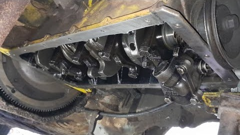

Como abrir o carter de um chvette em casa?
Por que abrir o cárter de um Chevette?
Existem muitas razões perfeitamente justificáveis para alguém decidir abrir o cárter de um Chevette em casa. Talvez o motor esteja fazendo um barulho estranho, talvez seja necessário verificar o estado do óleo ou, em situações mais específicas, talvez você simplesmente tenha acordado em um domingo com a sensação de que precisava descobrir o que existe dentro daquela parte do motor.
Também pode acontecer de você estar procurando uma ferramenta que caiu em algum lugar da garagem e, por algum motivo completamente inexplicável, concluir que a melhor maneira de encontrá-la é desmontando o cárter do Chevette.
Outra possibilidade é a clássica: o carro está funcionando normalmente, não apresenta problema algum, mas você começa a pensar "será que eu consigo abrir isso?". Cinco minutos depois, você já está com uma caixa de ferramentas no chão e tentando lembrar onde deixou a chave para soltar os parafusos.
Neste guia, vamos mostrar de forma simples o que é o cárter, por que alguém precisaria removê-lo e quais cuidados devem ser tomados durante o processo.

Passo a passo para desmontar o carter:
- O primeiro passo é deixar o veículo em uma condição segura para manutenção. Também é importante proteger o local contra derramamento de óleo e separar um recipiente adequado para o óleo usado.
- Como o cárter armazena o óleo do motor, sua remoção normalmente envolve retirar previamente o óleo lubrificante. O óleo deve ser recolhido em um recipiente apropriado e posteriormente encaminhado para descarte correto.
- Com o veículo devidamente apoiado, é possível localizar o cárter na parte inferior do motor. Dependendo da configuração do veículo e das peças instaladas, pode ser necessário remover ou afastar algum componente que impeça o acesso.
- O cárter é preso ao motor por vários elementos de fixação. Eles devem ser removidos de maneira cuidadosa e organizada, evitando forçar ou danificar as superfícies de contato. Depois que as fixações forem retiradas, o cárter pode ser separado do bloco do motor. A vedação entre as peças deve ser tratada com cuidado, pois sua substituição é importante durante a remontagem.
- Com o cárter removido, é possível realizar uma inspeção visual de sua parte interna e verificar a presença de sujeira, resíduos metálicos ou outros sinais que possam indicar problemas no motor. Também é uma oportunidade para verificar as condições da região inferior do motor e da vedação.
- Depois da inspeção e limpeza, a montagem deve ser realizada utilizando uma vedação adequada e seguindo as especificações de aperto do modelo específico do veículo. É importante não apertar os elementos de fixação de maneira excessiva, pois isso pode danificar a vedação ou até mesmo componentes do motor.
Vídeo: COMO RETIRARO CARTE DO CHEVETTE SEM PRECISAR RETIRAR O MOTOR
O que pode dar errado?
Desmontar o carter pode parecer uma tarefa símples, mas impoe diversos riscos, mas vale lembrar de sempre verificar a fixaçõa dos parafussos e monitorar se não ocorrerá novos vazamentos, caso isto ocorra, tente reabrir o carter e fixar novamente, pois a prática leva à perfeição!